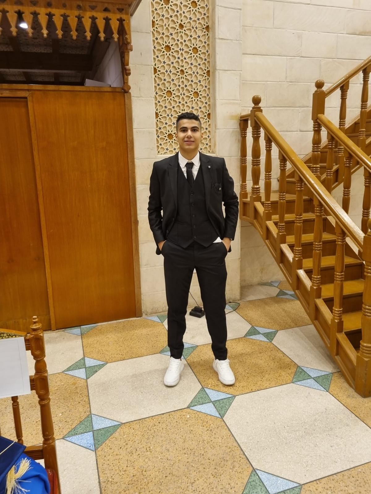

Hi, I'm Hussein Dakik

Work Ready Professional | Developer | Tech Enthusiast
Work Ready Professional | Developer | Tech Enthusiast
Hello, I’m Hussein Dakik — a third-year Computer Science student at Beirut Arab University with a strong academic foundation and a clear vision for the future.
I am deeply passionate about web development and am actively working toward becoming a proficient full-stack developer. Throughout my academic journey, I have developed a solid understanding of programming languages suchs as HTML, CSS, JavaScript, and Node.js, and continue to expand my skills through hands-on projects and personal learning. I believe in writing clean, efficient code and creating user-friendly, responsive digital experiences.
Beyond the technical side, I’m driven by curiosity, problem-solving, and a constant desire to improve. My portfolio reflects not only what I’ve built so far but also the potential of what I aim to achieve. I'm excited about contributing to innovative projects, collaborating with like-minded individuals, and growing as a developer in today’s fast-paced tech world.
Here are some of my featured projects.

A Java application with GUI using LinkedLists and Binary Trees to manage student attendance efficiently.
Technologies: Java, Swing, Data Structures
View on GitHubClick the link below to view or download a compilation of my portfolio documents and assessments.
Download Portfolio Documents (PDF)A detailed overview of my education, skills, and experience.
+2348100856000, 71401934 | husseindakik@gmail.com | Beirut, Lebanon
As a second-year computer science student, I bring a passion for problem-solving and a strong foundation in software development principles. With a keen interest in becoming proficient in both mobile application and website development, I am eager to expand my skill set and embrace new technologies. I am highly motivated, adaptable, and committed to continuous learning and growth.
A brief introduction about my motivation and what I can bring to your organization.
Dear Sir/Madam,
I came across your school's job posting on the Instagram page "beirutmodernschool" on September 15 and was excited to see your search for a Computer Science Specialist. I am writing to express my interest in this position, as my qualifications and enthusiasm align perfectly with the role.
I hold a Bachelor's degree in Computer Science from Beirut Arab University and have hands-on experience in tech-based projects, including system development and educational software. I am confident in my ability to support your students in mastering essential computer skills, programming, and technology literacy. My attention to detail and ability to manage multiple tasks efficiently would make me a valuable asset to your team.
Additionally, I am eager to further my experience in the educational sector, particularly at a respected institution like yours. This opportunity would allow me to contribute meaningfully while advancing my professional growth.
Thank you for your time and consideration. I look forward to the possibility of discussing how I can support your school's mission.
Best regards,
Hussein Dakik
Feel free to reach out for opportunities or collaboration.